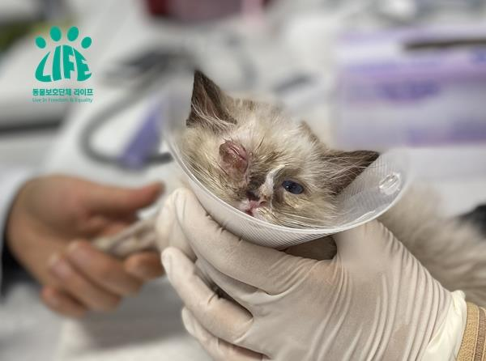
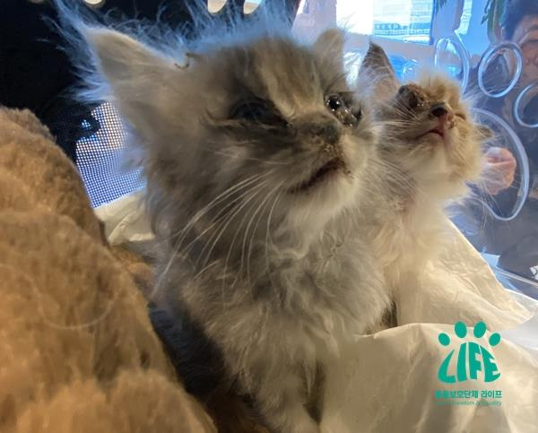
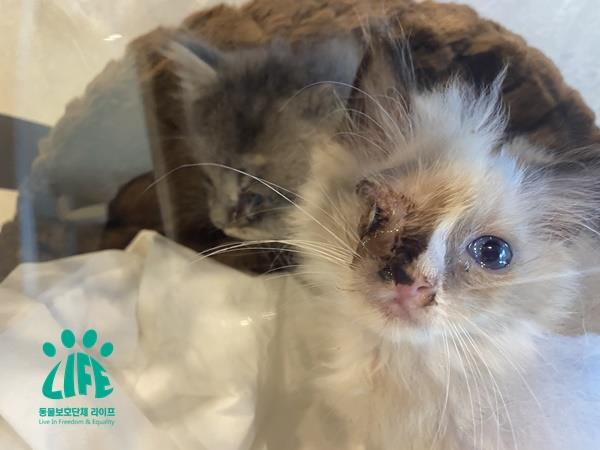

Caught an illegal cat factory located in a residential area in Busan Swimming District! However...
Registration Date Author Life Attachment activitydata_14_06 {kind=link}
- Detection of about 260 illegal cat factories in Busan Water Permanent Residential Area
- Missed the Golden Time of the Investigation and Earned Time for Destruction of Evidence
- 2 of the 10 cats handed over to Life
In December of last year, Life received a tip from an informant that it was continuing to engage in illegal cat breeding without a permit for a long period of time at its parent home in Busan Sub-permanent District. Accordingly, we investigated the area around the house and determined that the contents of the report were more or less credible, and through this, we responded by holding a meeting with the relevant agencies, the Swimming District Office and the Busan City Hall officials, to resolve the problem.
On January 14, 2020, representatives of Life, Busan City Hall, and the Swimming District Authority visited the house and attempted to conduct a direct investigation into whether there was a violation of the Animal Protection Act, but they were unable to do so because the police did not open the door when they were dispatched, and the Swimming District Office filed a complaint with the Southern Police Station through an agency complaint, and filed a complaint with the Southern Police Station for alleged violations of the Animal Protection Act.
However, a few days later, there was a report that the accused was about to steal the cat, and through undercover he witnessed the scene where the cats in the house were being transported somewhere, and when he was suspicious, he contacted the Southern Police Department, and the investigator in charge of the investigation of the accused met with the accused in person and asked him to open the house, but the owner did not do so immediately, so he was told to come back a few days later and that he was going to do so, and the accused had an absurd incident in which he moved some of the cats somewhere at dawn on the day the police were scheduled to come, in an attempt to destroy the evidence.
Although the police had to obtain a court seizure search warrant from the outset to determine the substance of the case, it was a complacent judgment that missed the golden hour of the apparent investigation by asking the accused to show the inside of the house to the accused who refused to investigate by the administrative agency, so that the police would notice the beginning of the investigation. Since the seizure warrant was subsequently issued and the time it took to obtain the seizure was only one month, the accused could have spent that month cleaning up the surroundings to destroy as much evidence as possible for the alleged violation of the Animal Protection Act.
In a seizure search that took place on February 13, 2020, some 260 cats were being victimized only as a tool of profit from the Ji-an Lee that had been piled up on the 1st and 2nd floors of the house. Nevertheless, there were 10 cats quarantined at the scene for animal cruelty (disease) and the remaining 250 or so were left in the house. The Animal Protection Act, which has been amended several times to impose a duty on animal breeding and stipulates that it is animal cruelty if a violation results in illness or injury, however, officials in charge have arbitrarily and passively interpreted this provision, resulting in the majority of cats being left untouched in cat factories. This would have been strongly questioned if Life had accompanied him to the scene, but the Southern Police Department, the Swimming District Office, and the Busan City Hall have completely concealed and abhorred the date of the execution of the seizure. Life's representative is also the Busan City Animal Protection Honor Guard, which can legally carry out rescue and protective measures for abused animals.
The 10 cats that were quarantined were sent to an organic animal shelter that had a consignment agreement with the Swimming District Administration, which said the animals would be treated the same as organic animals. In other words, if the adoptee does not show up within 10 days, euthanasia is also possible. I would like to ask the officials in charge of what is the fundamental reason for rescuing abused animals and taking quarantine measures.
Life communicated the adoption of the animals to the Swimming District Office and took over ownership of the 10 cats. The cats were taken to a veterinary clinic for treatment, but 2 of them died. Life will submit the cats' medical certificates and death certificates to the Southern Police Department, along with an opinion letter that "requests an active investigation into alleged violations of Article 8 of the Animal Protection Act." In addition, we will also actively work to amend the Animal Protection Act to solve the structural problem that the current Animal Protection Act has loose regulations on production and sales, and the penalties are weak, which increases the number of cases of abuse of it.
The incident, in the middle of a large city's residential neighborhood, where hundreds of animals were being sacrificed for their own benefit alone, could have rescued more animals if there had been the active will of the police, city hall and ward officials in the first place. Life will continue its efforts to rescue the animals that still remain in the cat factory.